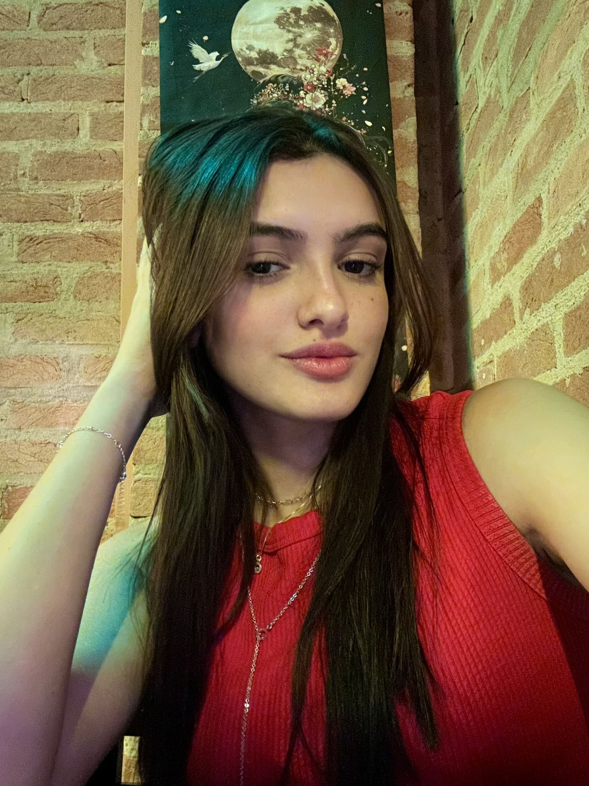
Sobre Mim
Gabi Barreto
Quem sou eu
Meu nome é Gabriela Barreto Garbatti Ferrari, tenho 18 anos e moro em Mococa, São Paulo. Nasci na cidade de São Paulo e atualmente curso o 3º ano do Ensino Médio no SESI.
Também estudo Desenvolvimento de Sistemas no SENAI, já concluí o curso técnico em Administração e continuo meus estudos de inglês.
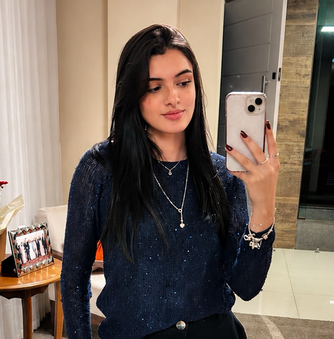
Área Profissional
Tenho muito interesse pela área de tecnologia, principalmente programação e desenvolvimento de sistemas. Meu objetivo é cursar Engenharia de Software na UNAERP, trabalhar na área e futuramente morar em Ribeirão Preto.
Busco aprender constantemente e me tornar uma profissional reconhecida pelo meu trabalho, dedicação e responsabilidade.
Sobre Mim
Sou uma pessoa que gosta de desafios, de aprender coisas novas e de viver novas experiências. Adoro conhecer pessoas, visitar lugares diferentes e aproveitar momentos com minha família e amigos.
Nos meus momentos livres gosto de ouvir música, ir à academia e sair para me divertir.
Meus Cachorros
Os meus cachorros fazem parte da minha história e da minha família. Tenho dois companheiros muito especiais: o Thor e o Apolo.
Thor é um Lhasa Apso. Meu pai o comprou filhote em 2011, quando eu tinha apenas 3 anos, e ele cresceu ao meu lado. Sempre foi um cachorro muito na dele e não gostava muito de carinho, mas demonstrava o amor dele do jeitinho dele. Adorava brincar de pegar a nossa mão, roubar chinelos e correr pela casa quando estava feliz. E tinha uma mania engraçada: não podia se ver no espelho que já começava uma "briga" com o próprio reflexo. Hoje ele já está bem velhinho e mais quietinho, mas as lembranças que vivemos juntos sempre terão um lugar especial no meu coração.
Apolo foi adotado pela nossa família em 2024 e está prestes a completar 2 anos. Ele é muito carinhoso, amoroso e brincalhão, e desde que chegou trouxe ainda mais alegria para a nossa casa.
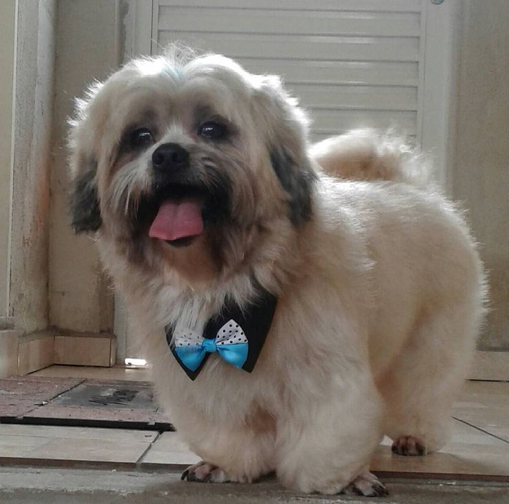
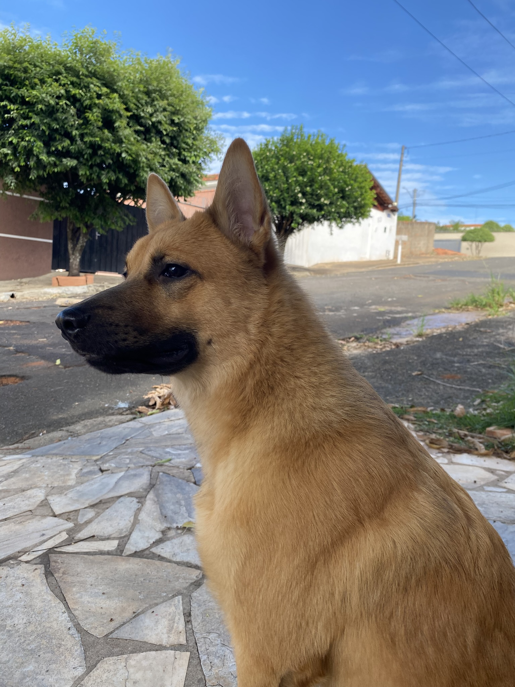
Meus Gostos
- Música: Pop (meu cantor favorito atualmente é PARTYNEXTDOOR).
- Série: Gossip Girl.
- Filme: Crepúsculo.
- Livro: As Mil Partes do Meu Coração, de Colleen Hoover.
- Hobbies: Academia, ouvir música, viajar e sair com amigos.
Meu Objetivo
Meu maior objetivo é construir uma carreira de sucesso, conquistar estabilidade financeira e proporcionar uma vida confortável para minha família, sempre buscando crescimento pessoal e profissional.
Minha Galeria
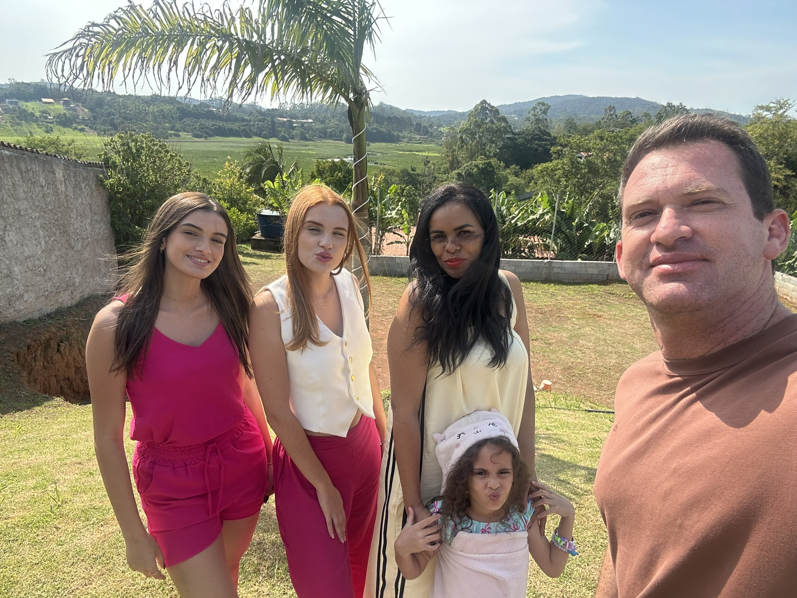
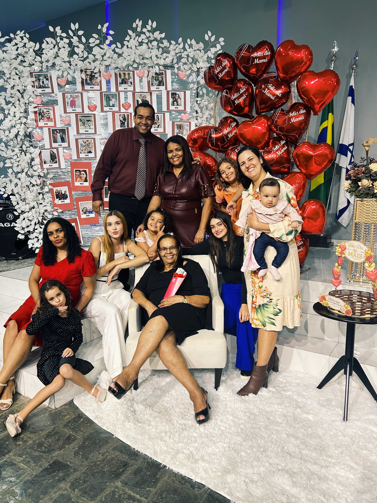
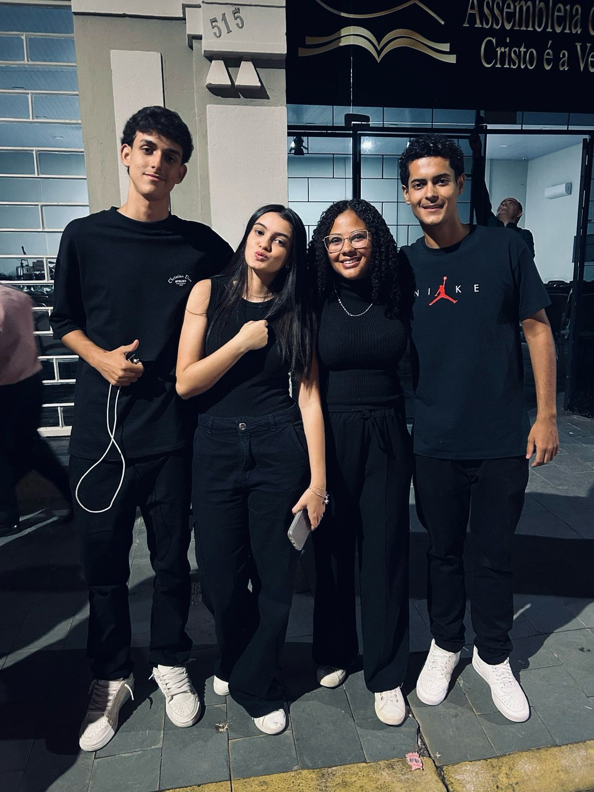
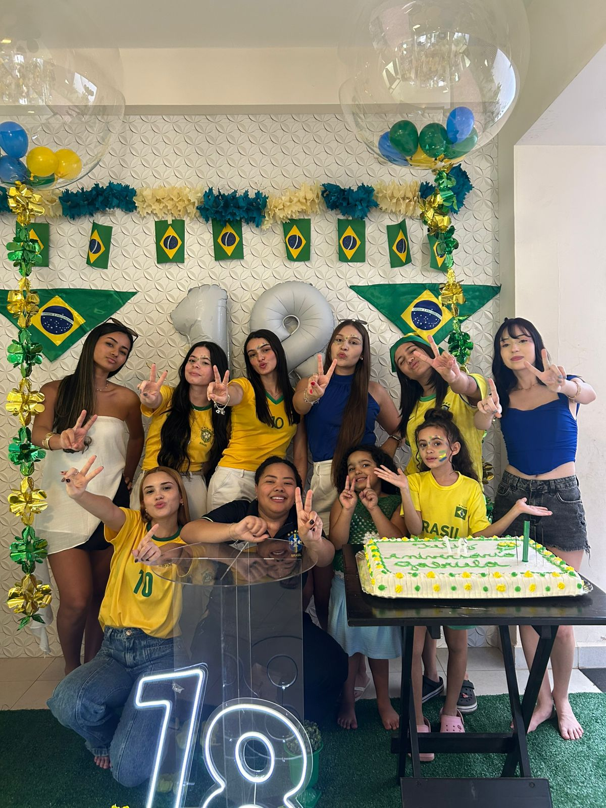
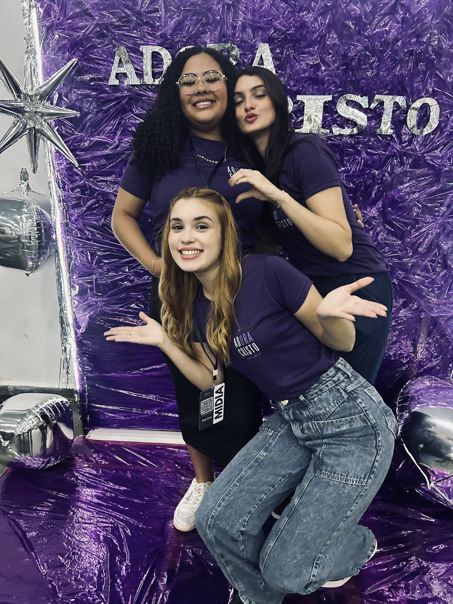
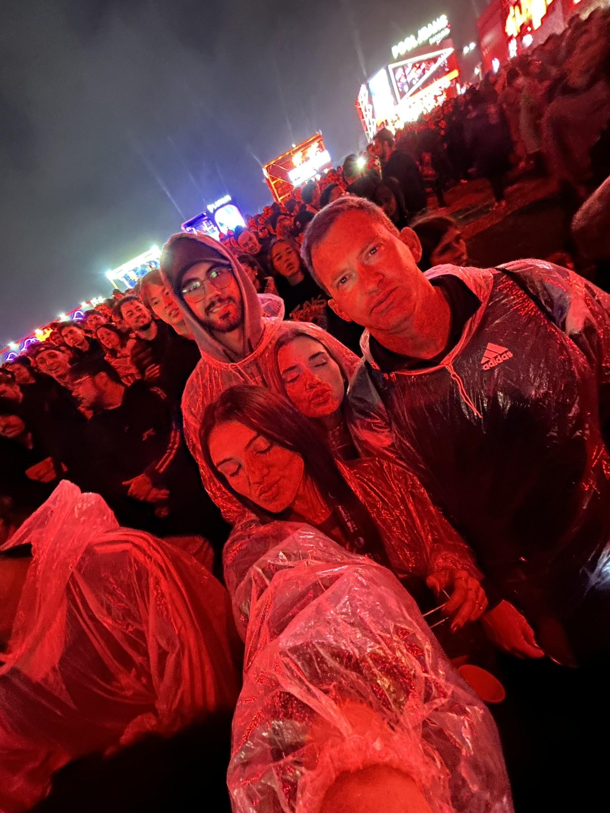
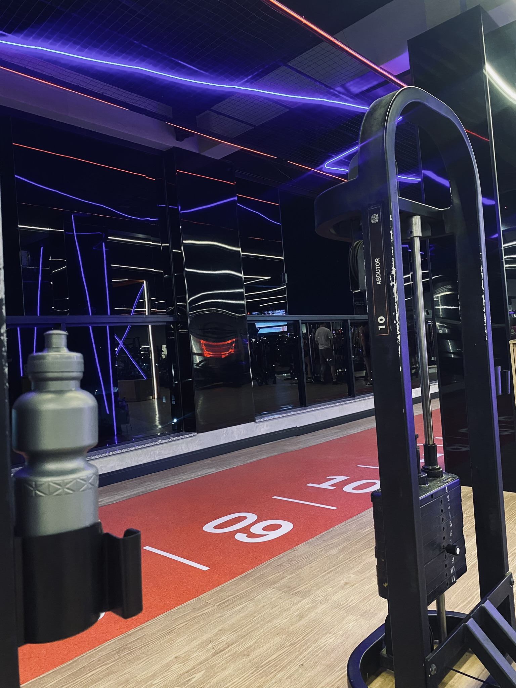
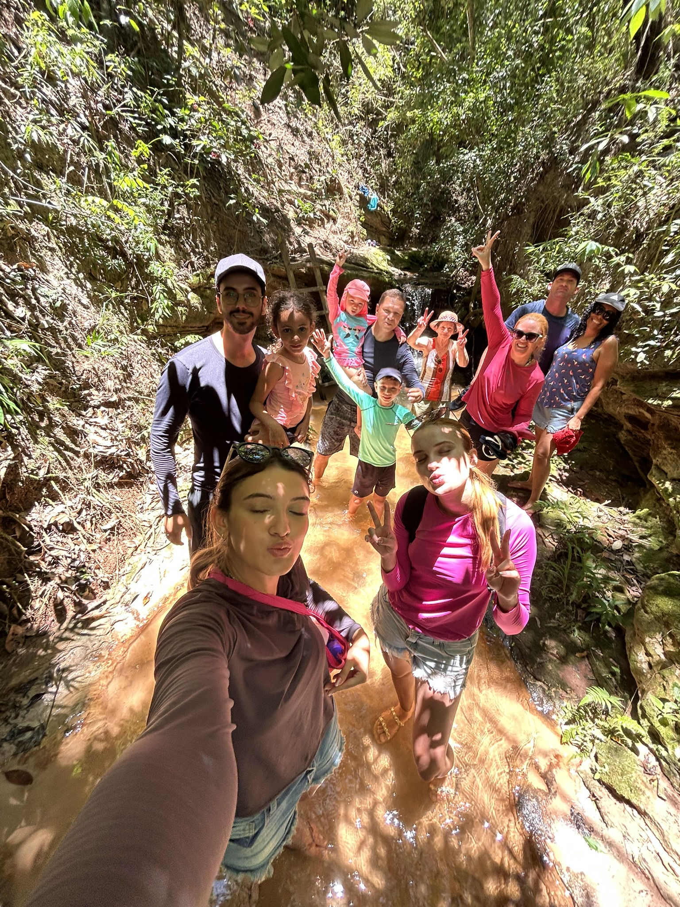